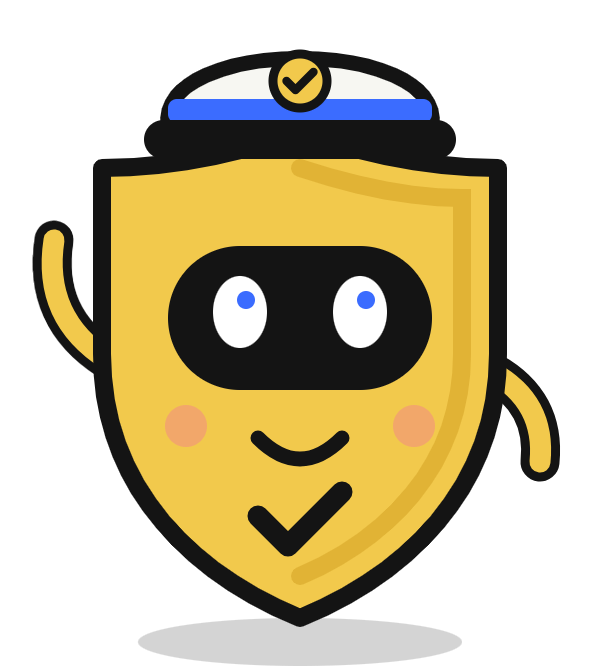
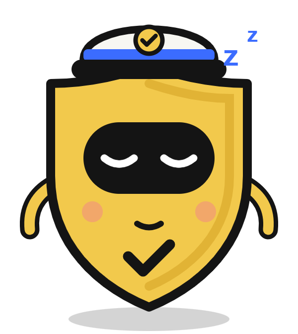
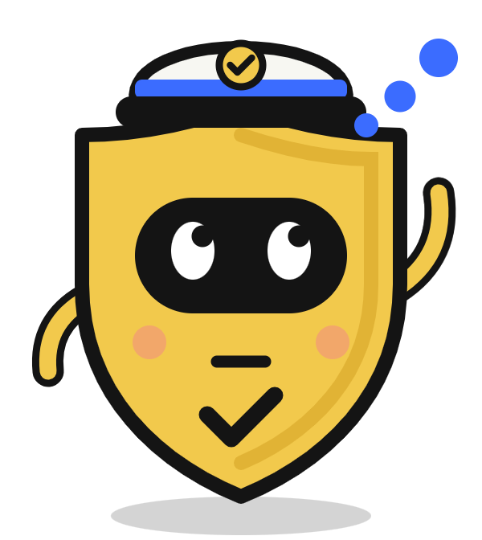
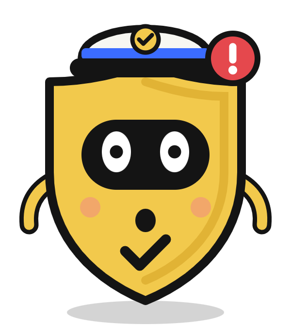
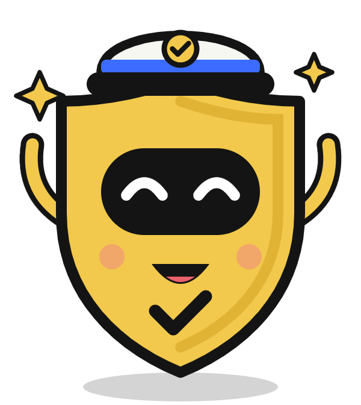
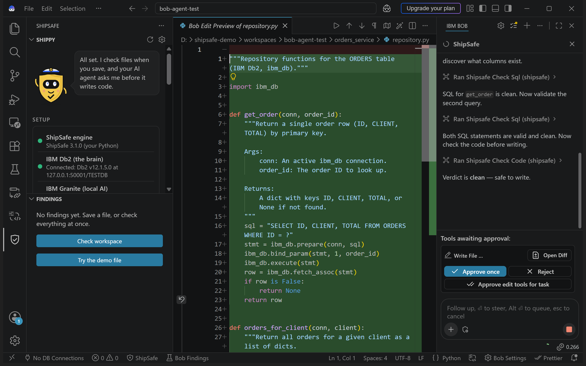
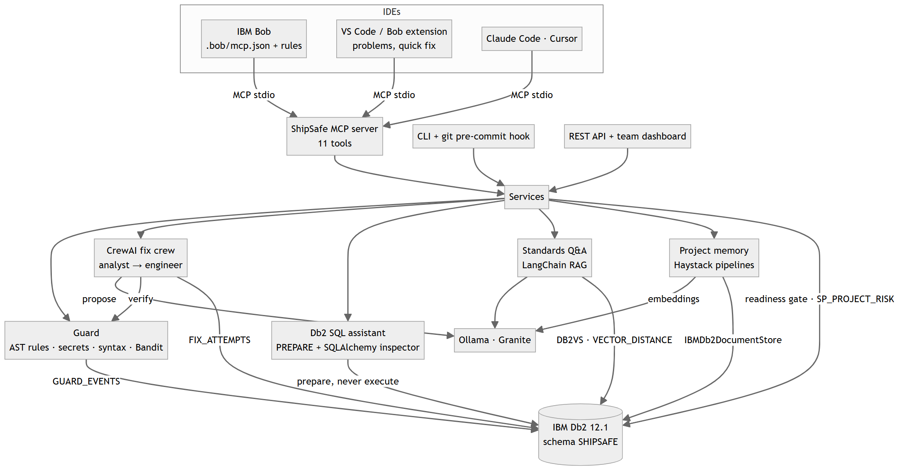

Every editor has a spell-check. None of them has a ship-check.

Even IBM Granite misused the Db2 driver in our own tests.
Scanners catch this later, in CI. The check happens at the wrong time.
Shippy sets it all up: engine, IBM Db2, Granite, the agent.

The video is still being edited.
2 native VECTOR(384) stores · VECTOR_DISTANCE · SQL PREPARE validation · 3 SQL PL procedures · MERGE, window views · full audit trail
Checks before code exists · AI fixes must pass deterministic checks · enforced pre-write hook in Claude Code
One MCP server, 11 tools · CrewAI on Granite · LangChain + Haystack on Db2 · SQLAlchemy catalog
Extension installs its own engine and can start Db2 in Docker · fresh-machine tests on Windows and Linux
All local · SQL never executed · parameter markers · least-privilege Db2 role · secrets in a private file
228 tests on real Db2 + Granite, zero mocks · live proof in real IBM Bob and Claude Code
Works in IBM Bob, VS Code, Claude Code and Cursor over MCP. A safety net on every saved file. Enforced in Claude Code.
Pre-write hooks wherever agents support them, so the check can't be skipped. Org policy packs in a shared Db2.
The same engine as a CI gate. More languages. Blocked patterns and accepted fixes in Db2 improve the rules.
Scale: every laptop runs its own checks and Granite (no GPU bill, no code leaves the machine). The whole team shares one IBM Db2 for rules, memory and the audit of every AI agent, with Db2's HADR and pureScale behind it.

Your AI writes the code.
shipsafe-bob.vercel.app
Free · open source · install it now in IBM Bob or VS Code

"I couldn't create deploy.py: the ShipSafe pre-write hook blocked it as a high-severity command-injection risk."
Every file saved or written to disk is checked, whether you or an agent wrote it.
SP_GUARD_SUMMARY: checks, blocks and verified fixes for Bob (mcp-use), Claude Code and VS Code.
The demo file, fixed by Granite and verified 3 times out of 3 (1 to 2 rounds).

ibm_db
tables, transactions, procedures
SQLAlchemy + ibm_db_sa
live catalog for "did you mean"
LangChain + langchain-db2
policy vectors, standards Q&A
Haystack + ibm-db-haystack
project memory
CrewAI
analyst → engineer fix crew
Ollama + Granite
granite4:micro, granite-embedding:30m